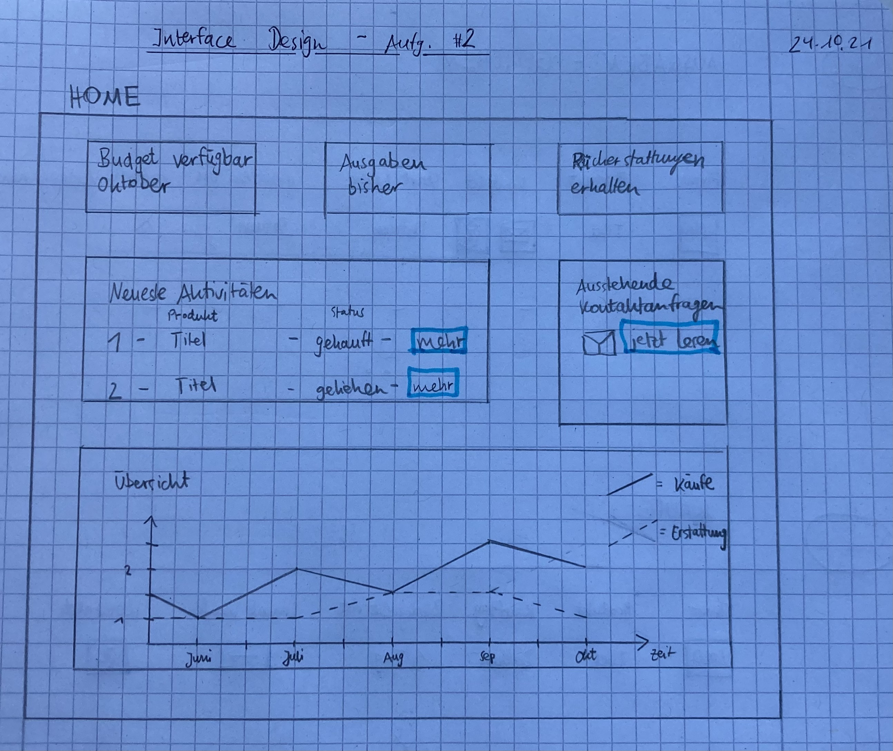

Inhaltsverzeichnis
Link PROTOTYP →
Link DOKUMENTATION →
Link USER INTERVIEW ERGEBNISSE →
Link README Github →
VUI Dialog Flow →
VUI Dialog High-Fid Prototype → (Achtung: Um Sprachbefehle geben zu können, muss die Leertaste gedrückt gehalten werden.)
#01.1 Themenvorschlag Interaktive Datenvisualisierung
Finanzen/Einkäufe Übersicht Endverbraucher
-
Idee Herleitung:
E-Commerce Dashboard für Händler (Shops) -> E-Commerce Käufe Übersicht für Endverbraucher -> Finanzen/Einkäufe Übersicht Endverbraucher
-
Beschreibung Idee:
Ein Dashboard, das Verbrauchern die Möglichkeit gibt, alle Ausgaben und Einnahmen im Überblick zu behalten. Dieses Grundprinzip wird um viele weitere Funktionen erweitert, die eine bessere Einsicht und Kontrolle der Umsätze ermöglichen. Zum Beispiel Änderungen zum Vormonat, umfangreiches Sortieren, Filtern und Kategorisieren der Umsätze, Aktien Portfolio Integration, schneller Kontakt zum Kundenservice des jeweiligen Unternehmens bei fragwürdigen Abbuchungen, Personalisierung
-
Funktionen:
- Übersicht über
- geliehene Produkte (z.B. E-Scooter über Groover) + verbleibende Mietzeit
- Anzahl, Art (Kategorisierung) und Auflistung gekaufter Produkte + Ablauf Rückgabefrist + Erstellung Rücksendung
- Ausgaben & Einnahmen nach Kategorie (Lebensmittel, Freizeit, Technik…) + Sortieren (z.B. nur Daueraufträge, Ausgaben, Einnahmen + Hervorheben wichtiger Ausgaben (Auswahl über Buchungspartner)
- Total Balance
- Integration Aktien
- Cashback Programme + Kündigen
- Statistik Veränderung zum Vormonat
- Kreditkarten + Limits
- Personal Customization Options (Farben, Personal Tags, etc.)
- Verknüpfung zu Kundendienst der Unternehmen hinter Ausgaben
- [Angesehener Bank Account wechseln]
- Erstellung von Regeln (Falls eine Ausgabe > als _€ ⇒ führe aus Aktion “X”)
-
Design Ideen:
- Struktur: https://dribbble.com/shots/14772167-Marketplace-Platform-Design-Concept https://dribbble.com/shots/15475440-Planet-User-Dashboard-for-Mobile-Banking
- Tiles: https://ibb.co/mHkM1xN
- Informationsdichte: https://dribbble.com/shots/14999332-Online-Clothing-Shop
- Mobile: https://dribbble.com/shots/14726514-Financial-App-Concept
#2 Prototypings
[blau eingekästelt = interaktiv]
Gestaltete Elemente:
- Home 
- Seite 1, Seite 2, Navigation

#03 Wahrnehmung und Aufmerksamkeit
Prototyp >User Aufgaben
- Problem #1: Du stellst dir die Frage, wie viel Geld dir im letzten März zurückerstattet wurde.
- Problem #2: Du möchtest überprüfen, ob du eine neue Nachricht vom Verkäufer zu der Erstattung deiner Rücksendung zu Bestellung Nr. 7391 erhalten hast.
- Problem #1: Du willst deine VISA Karte von $-Dash entfernen, da du sie nicht länger für Online-Bestellungen nutzt.